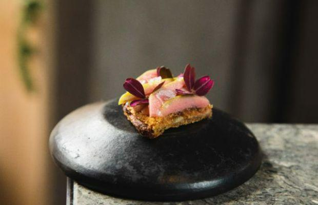
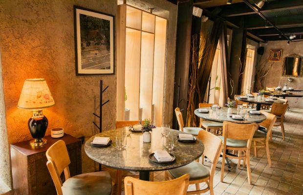
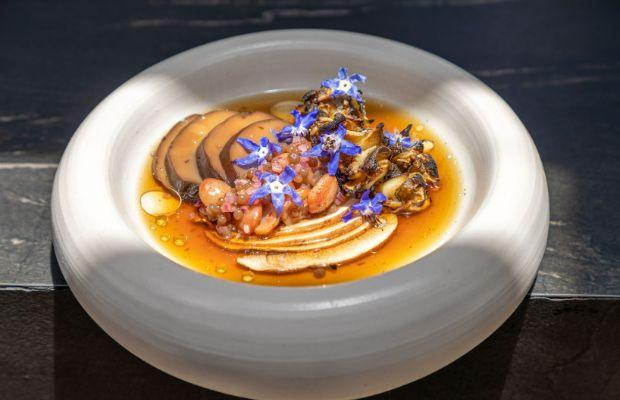

Don Julio Buenos Aires
Excelencia emblemática de un asador argentino



Excelencia emblemática de un asador argentino
¿Cuál es la historia? Si bien Don Julio comenzó como una parrilla de barrio en una propiedad de esquina del siglo XIX, hoy el restaurante familiar realmente ha elevado el listón a través de su compromiso con la ganadería argentina regenerativa, una bodega de 60.000 personas que abraza el vino argentino. historia y una dedicación inigualable a la agricultura orgánica.
Apariencias engañosas: si bien sus colas sugieren un "imán turístico", Don Julio en realidad conserva una enorme clientela local, que sigue regresando por sus deliciosos filetes y su ejemplar bodega. El servicio es preciso, pero el propietario y sommelier Pablo Rivero se asegura de que el restaurante también conserve un ambiente informal, invitando a los comensales a escribir mensajes amorosos en botellas vacías que luego se unen al muro de la fama del vino.
En el menú: disfrute de todo, comenzando con su variedad de embutidos curados de la casa antes de pasar a las principales atracciones carnosas acompañadas de espárragos orgánicos asados o cebollas perfectamente asadas. Los cortes especiales procedentes de ganado Aberdeen Angus y Hereford criados de forma regenerativa incluyen asado de tira (costillas cortas) y entraña (filete de falda).
¿Alguna otra empresa? Durante la pandemia, Rivero y el chef ejecutivo Guido Tassi abrieron La Carnicería de Don Julio, permitiendo a los comensales disfrutar de las famosas habilidades carniceras del dúo en casa. Recientemente, la parrilla también apadrinó una pequeña plaza, dándole una nueva vida como un jardín urbano biodinámico cuyas verduras se donan a los comedores comunitarios locales.
Vale la pena señalar: Don Julio, ex número uno, nombrado Mejor Restaurante de América Latina 2020, con sede en Palermo, también se llevó a casa el Premio Arte de la Hospitalidad en 2018. En 2022, Rivero fue elegido ganador inaugural del premio Beronia al Mejor Sommelier de América Latina. Otorgar. Este año es nombrado El Mejor Restaurante de Argentina 2023.
Guatemala 4691 (esquina Gurruchaga), Palermo Viejo, Buenos Aires, Argentina
+54 1148319564